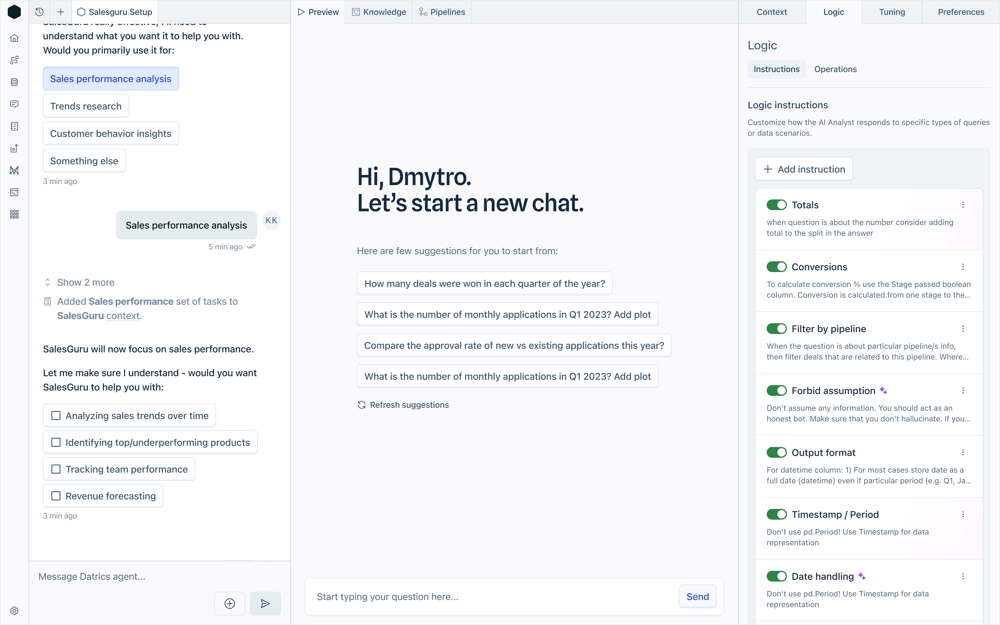
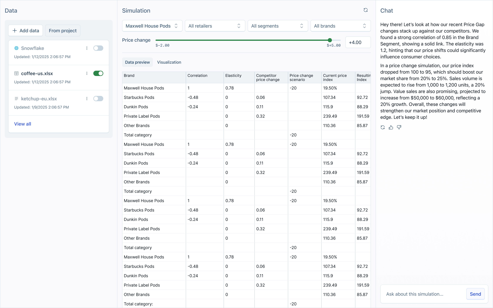

Datrics · Product Designer / Design Engineer
Datrics (YC W21) is an AI-driven data analytics platform for enterprise teams. I joined to turn a highly technical system into a product people could actually use.
I redesigned the analyst builder and onboarding, cutting time-to-first-insight from 18–20 to 4–6 minutes and raising activation 15–25%. I shipped 15+ features, including the AI playground, sharing and export, many of them built directly in code with Cursor and Claude.

For enterprise accounts, I designed modular testing and simulation UIs that made complex agent configurations legible, auditable, and repeatable. This reduced setup friction for technical users and improved demo‑to‑signup conversion in concert with marketing/sales flows.
